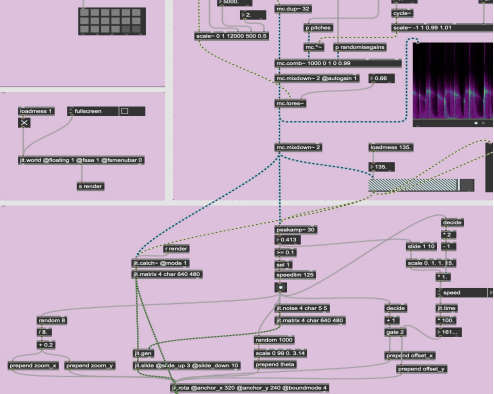
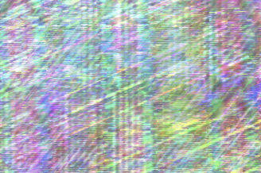

<!DOCTYPE html>
<html>
    <head>
        <meta charset="UTF-8">

        <!-- meta viewport tag needed to make site responsive on mobile devices https://developer.mozilla.org/en-US/docs/Web/HTML/Viewport_meta_tag -->
        <meta name="viewport" content="width=device-width, initial-scale=1" />

        <title>WCC Portfolio - Demo Page</title>

        <!-- including for some global styling -->
        <link rel="stylesheet" href="../css/style.css">

    </head>
    <body>
        <!-- if you have sub-pages think about adding a simple back button -->
        <nav>
            <a href="../">HOME</a>
        </nav>
        <header class="documentation-header">
            <section class="center-text">
                <h1>Synesthesia</h1>
                <h2>Xinyu Zhang</h2>
                <h2><p> Synesthesia weaves a tapestry of auditory and visual wonders, exploring the enigmatic realms of echoic and iconic memories, painting an immersive landscape where senses converge and technology embraces artistry.</p> </h2>
            </section>
        </header>

        <main class="documentation-page">
            <section>
                <div class="responsive-video centered-content">
                    <iframe title="vimeo-player" src="https://player.vimeo.com/video/823020047?h=f2c1828f4f" width="100%" height="100%" frameborder="0" allowfullscreen></iframe>
                </div>
            </section>
            <section>
                <h1>Introduction</h1>
                <h3><p>Synesthesia is an interactive auditory and visual art project that aims to investigate the
relationship between echoic memory and iconic memory, and how they may be
mutually associative. Drawing on research tests such as Sperling's (1960) procedure
for the iconic memory task, this project uses cutting-edge technology and software to
create an immersive experience for users. By collecting user experience data, the
project aims to provide valuable research samples for future academic and theoretical
research in the field of sensory memory and its applications in computer arts.</p></h3>
            </section>
            <section>
                <h1>Concept and Background Research</h1>
                
                <h3><p>The concept behind Synesthesia is inspired by the fascinating phenomenon of sensory
memory, specifically echoic and iconic memories. Echoic memory refers to the shortterm storage of auditory information, while iconic memory deals with visual information
(Cowan, 2008). Research has shown that these two types of sensory memory have
different storage durations and characteristics, with echoic memory lasting slightly
longer than iconic memory (Sperling, 1960).</p>
                    <p>Synesthesia seeks to explore the relationship between these two types of sensory
memory by creating an interactive experience that combines both auditory and visual
stimuli. The project is situated within the tradition of computational and interactive art, where artists utilize technology and software to create immersive and engaging
experiences for their audience (Paul, 2003). Additionally, the project draws inspiration
from psychological research on sensory memory, as well as previous studies that have
explored the potential interactions between different sensory modalities (Spence, 2011).</p>
                    
                 </h3>
                    
                <!-- if you have a full width image try make it not too tall -->
                
                
            </section>
            <section>
                <h1>Technical Implementation</h1>

                
                   
                
            <h3>
                <p>In this project, I utilized Max MSP for the implementation of sound, visual, and
interactive components. </p>

            <p> For the sound section, I employed the "mc" object to create multi-channel instruments. These instruments were designed to generate captivating, repetitive sounds in terms of
pitch, volume, or frequency. To analyze the waveforms, I used the "spectro" object, and for detecting the sound components, I applied a resonant lowpass filter.</p>
        <p>In the visual section, I controlled the canvas using "jitter.matrix" and processed the
visual patterns with functions like "jit.rota." Since visual information is generally
processed faster than auditory information due to the more direct pathway from the
retina to the primary visual cortex, I incorporated delays to synchronize the visuals with
the sound. </p>
<p>Lastly, for the interaction section, I parameterized the instrument by switching between
various settings and connecting the OSC (Open Sound Control) to call these
parameters. I linked the OSC data to the sound parameters, controlling the visual
changes based on the sound's loudness. When the OSC data remains horizontally
stationary, the visuals display clear, saturated graphics and colors. However, when the
data changes, the visuals transform into a blank, flickering scene, creating a subtle
associative response.</p></h3>
            
                <!-- example of styling for three images, you can write your own styling -->
                

                <!-- default flex item is for 4 & follows media query styling for home page -->
                <div class="flex-container">
                    <div class="flex-item">
                        
                    </div>
                    <div class="flex-item">
                        
                    </div>
                    <div class="flex-item">
                        
                    </div>
                    
                   <p> <div class="flex-item">
                        
                    </div>
                    <div class="flex-item">
                        
                    </div>
                    <div class="flex-item">
                        
                    </div></p>
                </div>
                <p>(visual change effect)</p>
            </section>
            <section>
                <h1>Reflection and Future Development</h1>
            <h3>
                <p>Overall, the development of Synesthesia was a successful exploration of the
                    association between echoic and iconic memories through interactive auditory and
                    visual art. The project effectively integrated technological and artistic elements to
                    create an immersive experience that can potentially provide valuable insights into the
                    nature of sensory memory.</p>
                <p>In future iterations of the project, there are several potential areas for development and
                    improvement. First, incorporating more advanced algorithms for sound and visual
                    processing could enhance the responsiveness and complexity of the interactive
                    experience. Second, expanding the range of auditory and visual stimuli could provide a
                    more comprehensive understanding of the relationship between echoic and iconic
                    memories. Lastly, developing a more sophisticated method for collecting and analyzing
                    user experience data would be beneficial for advancing theoretical research in the field
                    of sensory memory and computer arts.</p>
                </h3>
            </section>
            <section>
                <h1>References</h1>
                <ul>
                    
                <p><li><h4>1. Wikipedia Contributors (2019). </h4>
                    <div> 
                        <a href="https://en.wikipedia.org/wiki/Echoic_memory.">
                             <h5>Echoic memory</h5> 
                        </a>
                    </div>
                    <div></li></p>

                        <p><li><h4>2. www.youtube.com. (n.d.). Helpful Objects to Know: Itable - Max MSP Tutorial</h4>
                            <div> 
                                <a href="https://www.youtube.com/watch?v=AkYRhaD5xoc&t=1s">
                                     <h5>Itable - Max MSP Tutorial</h5> 
                                </a>
                            </div>
                            <div></li></p>

                                <p><li> <h4>3. www.youtube.com. (n.d.). Max/MSP techno: exponential beatmaking.</h4>
                                    <div> 
                                        <a href="https://www.youtube.com/watch?v=L97UEwlfROg">
                                             <h5>exponential beatmaking</h5> 
                                        </a>
                                    </div>
                                    <div></li></p>

                                        <p><li><h4>4. www.youtube.com. (n.d.). Max/MSP performance: signal-driven FM drums and
                                            telephasic alan watts. </h4>
                                            <div> 
                                                <a href="https://www.youtube.com/watch?v=Wi6bT8UGFJ4">
                                                     <h5>signal-driven FM drums and
                                                        telephasic alan watts</h5> 
                                                </a>
                                            </div>
                                            <div></li></p>
                        
                                                <p><li><h4>5. Cowan, N. (2008). What are the differences between long-term, short-term, and
                                                    working memory? Progress in Brain Research, 169, 323-338.</h4>
                                                   </li></p>
                        
                                                   <p><li><h4>6. Paul, C. (2003). Digital Art. London: Thames & Hudson.</h4>
                                                   </li></p>

                                                   <p><li><h4>7. Spence, C. (2011). Crossmodal correspondences: A tutorial review. Attention, Perception, & Psychophysics, 73(4), 971-995.</h4>
                                                   </li></p>
                        
                                                   <p><li><h4>8. Sperling, G. (1960). The information available in brief visual presentations. Psychological Monographs: General and Applied, 74(11), 1-29.</h4>
                                                   </li></p>

                    
                </ul>
            </section>
        </main>

        <footer>
            <!-- normally information like contact details etc  -->
            <!-- read more about semantic HTML https://www.w3schools.com/html/html5_semantic_elements.asp -->
            
         </footer>
    </body>
</html>